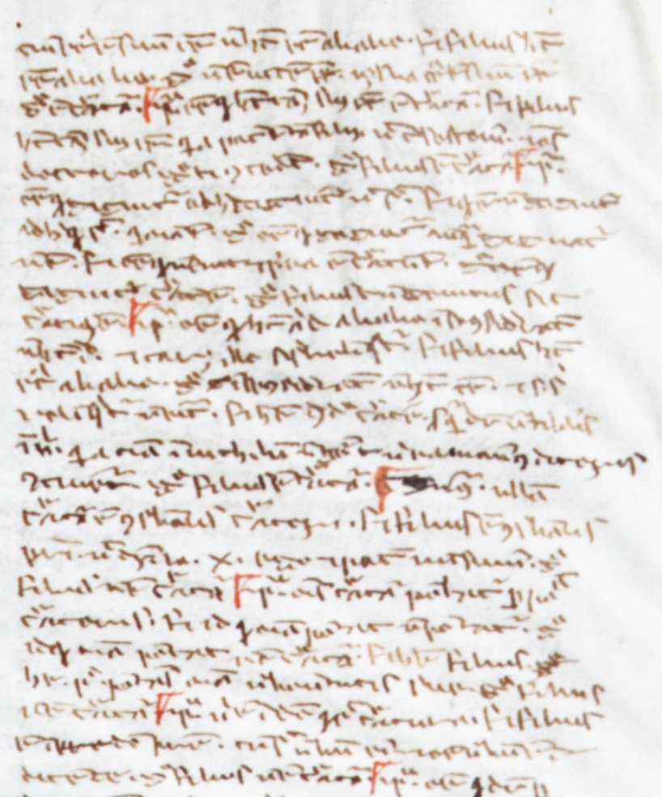

CORPUS THOMISTICUM
Fragmentum autographum S. Thomae de Aquino
Coria, Museo Catedralicio, f. 1rb sup.
Super Sent., lib. 3 d. 11 q. 1 a. 1 arg. 4 - s. c. 3

© 2006 Fundación Tomás de Aquino et Museo Catedralicio de Coria. Iura omnia asservantur